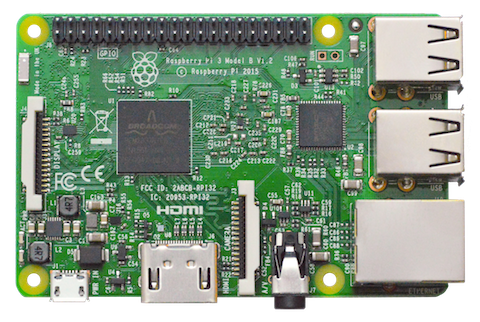

What is Android?, Feature,and Hardware
Features of Android
Interface
Android's default user interface is mainly based on direct manipulation, using touch inputs that loosely correspond to real-world actions, like swiping, tapping, pinching, and reverse pinching to manipulate on-screen objects, along with a virtual keyboard. Game controllers and full-size physical keyboards are supported via Bluetooth or USB.Applications
Many, to almost all, Android devices come with preinstalled Google apps including Gmail, Google Maps, Google Chrome, YouTube, Google Play Music, Google Play Movies & TV, and many more. See also: Android software development and Google Play. Applications ("apps"), which extend the functionality of devices (and must be 64-bit), are written using the Android software development kit (SDK) and, often, Kotlin programming language, which replaced Java as Google's preferred language for Android app development in May 2019, and was originally announced in May 2017. Java is still supported (originally the only option for user-space programs, and is often mixed with Kotlin), as is C++. Java and/or other JVM languages, such as Kotlin, may be combined with C/C++,[97] together with a choice of non-default runtimes that allow better C++ support.[98] The Go programming language is also supported, although with a limited set of application programming interfaces (API).
Memory management
Since Android devices are usually battery-powered, Android is designed to manage processes to keep power consumption at a minimum. When an application is not in use the system suspends its operation so that, while available for immediate use rather than closed, it does not use battery power or CPU resources.Hardware
The main hardware platform for Android is ARM (the ARMv7 and ARMv8-A architectures), with x86 and x86-64 architectures also officially supported in later versions of Android.[118][119][120][121] The unofficial Android-x86 project provided support for x86 architectures ahead of the official support.[122][123] The ARMv5TE and MIPS32/64 architectures were also historically supported but removed in later Android releases.[124] Since 2012, Android devices with Intel processors began to appear, including phones[125] and tablets. While gaining support for 64-bit platforms, Android was first made to run on 64-bit x86 and then on ARM64. Since Android 5.0 "Lollipop", 64-bit variants of all platforms are supported in addition to the 32-bit variants.